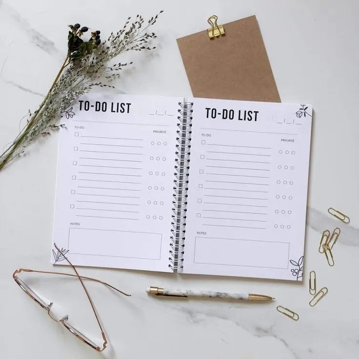
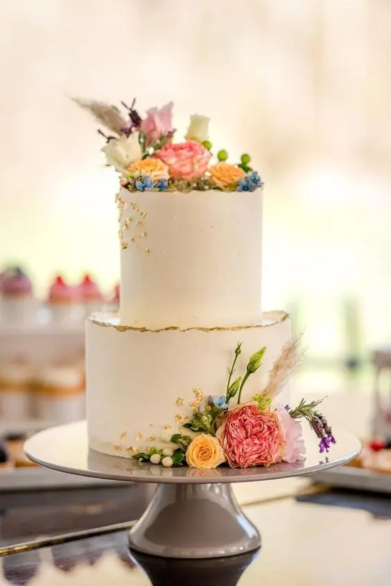
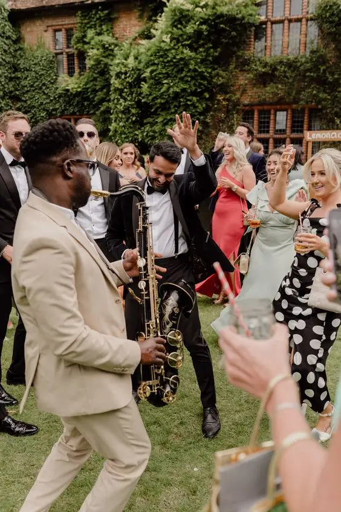
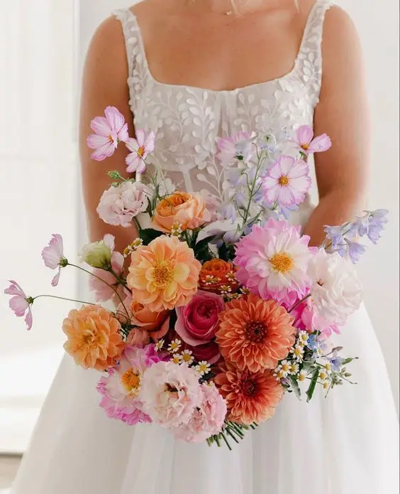
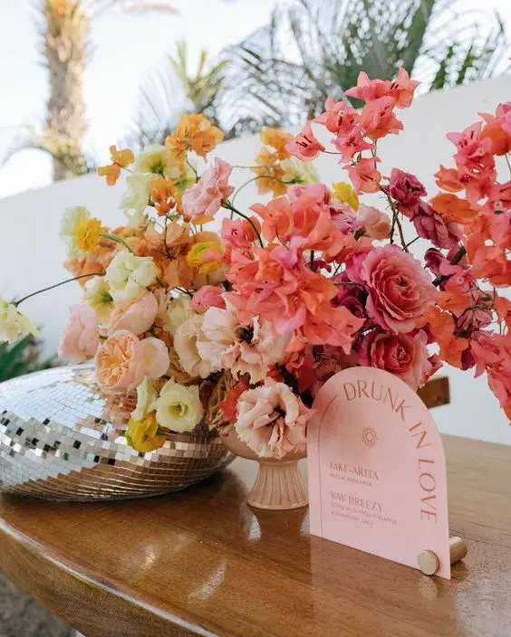

A wedding, the sacred moment when two souls are bound for ever, is a monumental step in any couple's life. Yet behind the splendour of the wedding dresses and the magic of the reception decor lies a considerable amount of organisation. To avoid stress and guarantee the success of this memorable day, a task list, or "to-do list", proves to be an indispensable tool. In this article, we take an in-depth look at the essential items to include in a wedding to-do list to help you plan this extraordinary event without a hitch.
Why a to-do list matters
A wedding is a complex event involving many details and preparations. That is why a task list is essential for keeping track of every step of the planning. By keeping an organised list, you can make sure nothing is forgotten and that everything goes to plan on the big day.
Drawing up a complete list
To start, it is crucial to draw up an exhaustive list of every task to be done. This includes booking the ceremony and reception venues, selecting suppliers such as the caterer, photographer, DJ or band, and managing invitations and accommodation for your guests. By grouping tasks into clear themes such as the ceremony, the guests and the organisation, you can structure your to-do list in an efficient, orderly way.
The event

How to organise a ceremony
The ceremony is one of the most meaningful parts of the wedding, where vows are exchanged and commitments sealed. Make sure you set aside time to plan this precious moment. This means choosing the ceremony venue, deciding on the type of ceremony (religious, civil or symbolic) and coordinating with the celebrant or officiant. Keep "ceremony" at the top of your to-do list so nothing is left to chance.

How to organise a reception
After the ceremony, the reception is the chance to celebrate with family and friends. Choose a venue that matches your vision and your budget, and work with the venue manager to organise logistical details such as decor, catering and entertainment. Add "reception" to your to-do list to track every planning step needed for this crucial part of your day.
A little tip for choosing your dress
The wedding dress is often one of the most memorable elements of a wedding. With so many options available, it is important to start your search early. Plan fittings at several bridal boutiques and allow for delivery and alteration times. Keep "dress" on your to-do list to make sure you find the perfect outfit for your special day.
Alexandra Ambert
The guests

Managing the guest list: who to invite?
The guest list is one of the most delicate aspects of planning a wedding. Start by drawing up a preliminary list with your families and working out how many guests you can host. Then send the invitations far enough in advance for guests to plan to attend. Keep "guests" on your to-do list to help you track RSVPs and finalise accommodation and transport for guests coming from afar.

Wedding stationery: invitations that dazzle
Wedding invitations are the first impression your guests will have of your big day, so make sure they are memorable. Choose a design that reflects your personal style and the look of your wedding. Don't forget to include all the important information such as the date, time, venue and RSVP details. Keep "stationery" on your to-do list to make sure everything is ready in time to be sent.
The art of organisation
Finally, organisation is the key to success when planning a stress-free wedding. Use tools such as calendars, dashboards and wedding planning apps to stay organised and on track. Regularly set aside time to update your to-do list and check your progress.
Everything you need to know about the wedding cake
The wedding cake is an unmissable tradition that deserves special attention. Meet several cake makers to taste samples and discuss design options. Make sure you take your guests' dietary preferences into account when choosing flavours and fillings. Add "cake" to your to-do list to ensure this sweet treat lives up to your expectations on the big day.


A top-quality atmosphere
Music plays a crucial role in creating the atmosphere of your wedding. Whether you opt for a DJ or a live band, make sure you choose professional musicians able to create a magical atmosphere. Select a varied playlist that will please all your guests and include special songs for key moments such as the first dance and the cutting of the cake. Keep "music" on your to-do list to coordinate every detail with your suppliers.
Adorning this unique day
Flowers add a touch of freshness and elegance to any wedding ceremony. Whether for the bridal bouquet, the altar arrangements or the table decorations, choosing the right flowers is essential. Consult a professional florist for advice on varieties that suit your theme and budget. Add "flowers" to your to-do list so you don't overlook this crucial part of your wedding decor.



The financial details
The budget is an essential part of planning a successful wedding. Stick to a detailed list of planned expenses and keep a close eye on every transaction related to your wedding. Don't forget to leave some leeway for the unexpected and any overspending. Add "budget" to your to-do list to keep your finances under control throughout the planning process.
Plan B
Finally, despite all your careful planning, it is important to be ready for the unexpected. Put together a back-up plan to deal with possible problems such as bad weather, supplier delays or medical emergencies. Keep "plan B" on your to-do list so you are ready for any eventuality and your special day runs smoothly.
In short, a complete, well-organised to-do list is the key to a successful wedding. By including every essential aspect, such as the ceremony, the reception, the dress, the guests and the logistics, you can plan your wedding with confidence and peace of mind. So start creating your own to-do list now and get ready for the wedding of your dreams!


Tips for stress-free wedding planning
Planning a wedding can be a monumental task, but with the right tips you can make the process as smooth as possible. Here is some practical advice to help you organise your wedding without stress:
- Start early: planning a wedding takes time, so start as soon as possible. The earlier you begin, the more time you will have to make considered decisions and avoid last-minute rushes.
- Set a realistic budget: before you start planning, work out how much you can afford to spend on your wedding. This will help you prioritise your spending and resist the temptation to go over budget.
- Stay organised: use a detailed to-do list to track every task and deadline. You can use wedding planning apps or simply a notebook and pen to keep track of everything.
- Ask for help: don't be shy about asking your family and friends for help. They will probably be delighted to help make your special day even more memorable.
- Stay flexible: despite all your planning, surprises may happen. Learn to be flexible and creative in solving any problems that arise.
- Prioritise what matters to you: every couple has different priorities for their wedding. Whether it is the food, the music, the decor or something else, focus your resources on what matters most to you.
- Take time for yourselves: planning a wedding can be stressful, but don't forget to take time to relax and rest. Look after your physical and emotional wellbeing to stay on form throughout the process.
- Be ready to delegate: you don't have to do everything yourselves. Hand some tasks over to professionals or trusted loved ones to lighten your workload.
- Hiring a wedding planner is beneficial for many reasons. An experienced wedding professional can help you navigate the countless details and decisions, reducing the stress and worry of planning. They have in-depth knowledge of local suppliers, current trends and best practice, which can save you time and money. A wedding planner also coordinates the big day, making sure everything runs without a hitch so you can fully enjoy every moment of your special day free of logistical concerns.
- By following these simple tips, you will be well equipped to plan an unforgettable wedding without the stress that often comes with it. Remember that what matters is celebrating your love with your loved ones, whatever small hiccups may arise along the way.
- In conclusion, a well-planned wedding to-do list is a valuable tool for making sure your special day goes without a hitch. By keeping in mind essentials such as the ceremony, the reception, the dress and the guest list, you can plan your wedding efficiently and in an organised way. So pick up your pen and paper and start your to-do list today!